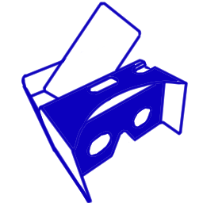

VR岡崎泰葉 -Planet Star-
|  |
スマートフォン＋VRゴーグルをお持ちの方はこちら そこそこのスペックのiPhoneかAndroidのWebブラウザで動きます タッチ操作はありません 焦点が合わないときは自動回転を有効にし、横画面で始めてみてください |
|
|
|
PC（Windows,Mac問わず）、 WebXR未対応スマートフォンの方はこちら マウスもしくはタッチ操作でカメラの向きを変えられます |
| Q.なにするやつですか | A.アイドルマスターシンデレラガールズ・元子役系アイドル岡崎泰葉ちゃんと 一緒にプラネタリウムを鑑賞するだけのゲームです |
|
| Q.見るだけですか | A.見るだけです。 十数パターンの動きがあります。 しばらく待っているといいことあるかも |
|
| Q.本当にこれだけなん | A.ちょっとした更新入れるかもしれません | |
| Q.VR開けません | A.画面下にENTER VRというボタンが出ていれば始められます。 ENTER VRがなければその環境では非対応です Androidの場合はGoogleのVRサービスアプリがインストールされている必要があります ENTER VRの後に真っ暗のまま始まらないときは戻ってリロードしてみてください |
|
| Q.VR使うと身長などの身体的特徴がバレるんですか | A.定型文なので気にしないでください。私も知りません。 | |
| Q.後ろに置いてる物体あれ何 | A.自作のプラネタリウム投影機（のつもり）です。 岡崎先輩の出身地である長崎にあるものをモデルにしました。 |
|
| Q.星適当じゃない？ | A.適当に作りました。深くは気にしないでください。 | |
| Q.使った素材について |
MMD 岡崎泰葉 nobunaga様 MMD 小物 Suidouya様,羽坂（@hxxsk）様 一部画像 photoAC あと自作 |
|
| Q.サポートとか苦情とか感想とか(?) |
珠美の踏み台 @megane_donuts 踏み台工房 |
スマートフォン用QRコード